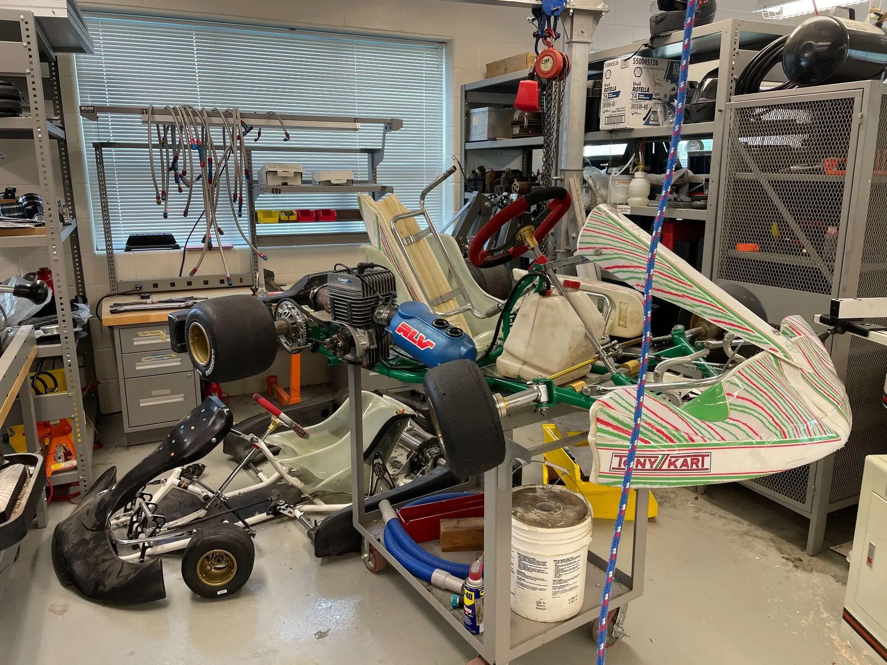
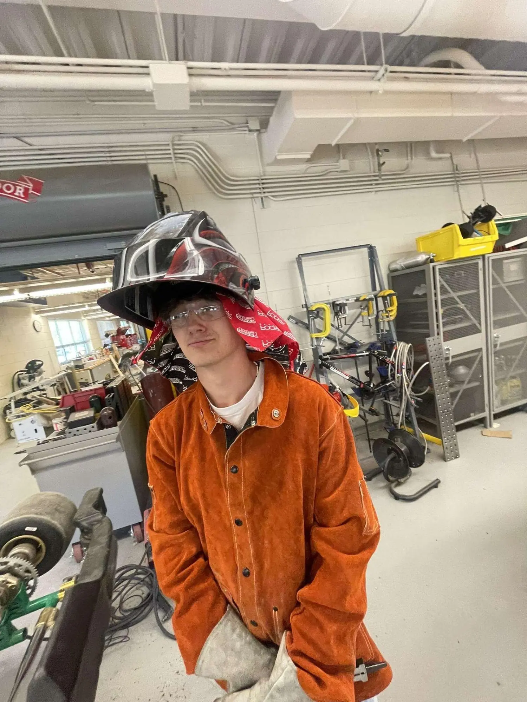
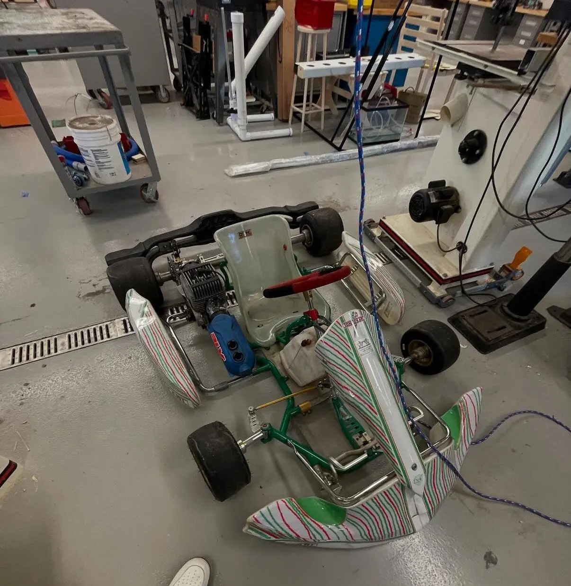
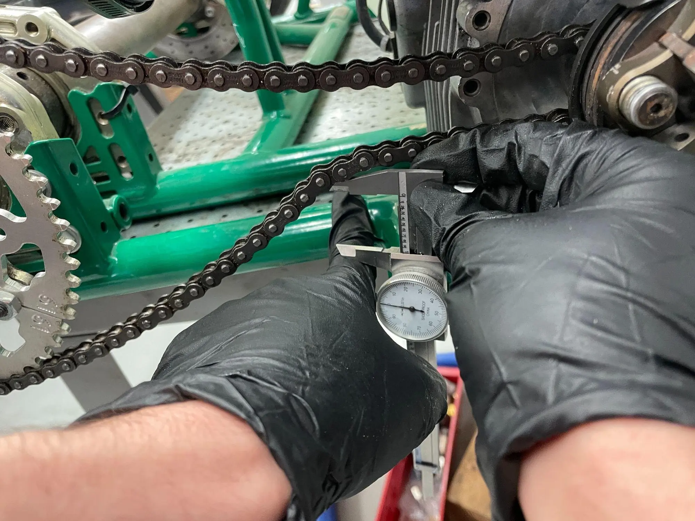

All projectsSheet 05 · Powertrain · 2023
Gas go-kart
As president of an automotive engineering club, I led a team of about ten students through the design and build of a gas-powered go-kart, while a separate group built an electric one. The kart was finished by the end of the 2023–24 school year.
My part
Fuel, clutch, chain and welds
I oversaw the whole gas-kart build and was most hands-on with the fuel system and power transfer. I assembled the fuel and clutch systems, built a chain-tensioning system and diagnosed the drive’s chain-tension problem. I also MIG-welded fixes to imperfections in the chassis and welded the exhaust components on.
The team’s parts were drawn in CAD, checked with FEA and CNC-machined from CAM toolpaths. That meant thinking about chassis rigidity, engine and component mounts, inserts, countersinks and tolerances.
- Team of ~10 students · finished 2023–24Built
- Fuel system and clutch assemblyBuilt
- Chain-tensioning systemBuilt
- MIG-welded chassis repairs and exhaustBuilt
- Custom CNC parts · engine and component mountsTeam
- Club member three years, president for the buildLeadership



Beyond the kart
Teaching how cars work
Over three years in the club I gave lessons to about 40 members on how cars work and where they are heading, including hydrogen combustion and alternative energy. The kart was where I first learned that the powertrain decides most of a vehicle’s design.